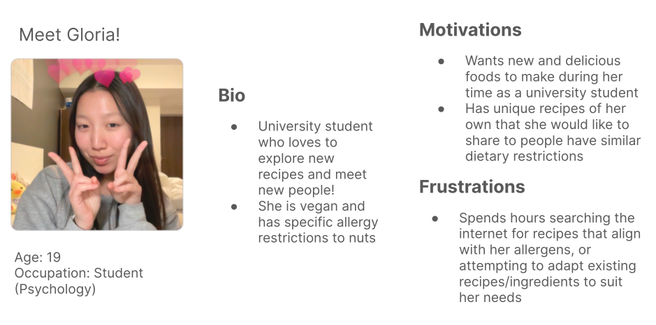
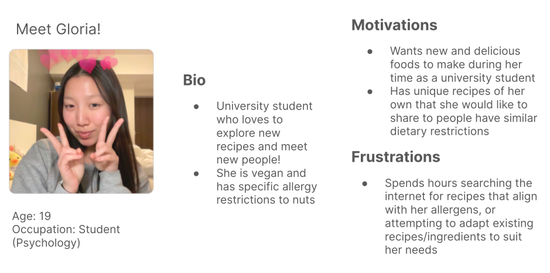

RecipEase
Mobile app designed to help people discover what to eat based on allergies and dietary needs
Client
Western Founders Network Product Design Sprint
Service
Product Management
Tools Used
Figma
Completion Date
April 2024
Overview
Challenges
Many people face dietary restrictions that make it challenging to find safe foods and prepare meals, affecting their social life and overall well-being. As part of Western University’s product design sprint, my team aimed to tackle this issue by creating a digital product that helps individuals with dietary restrictions navigate their food choices more easily and improve their dining experiences.
My Role and Process
As the product manager, I collaborated with 2 UX Designers in understanding the needs of individuals with dietary restrictions through extensive user research. Based on this, I determined the key features and functionalities needed for our product.
View PrototypeDiscovery
Research
Since I wasn’t familiar with the challenges faced by individuals with allergies, we began with secondary research to gain a better understanding of the impact of food allergies on their daily lives. Here are some of the key insights we discovered:
- 3 million+ canadians have alergies
- Up to 53% of adults living with allergies avoid social interactions
- 60 percent reported that food allergies significantly affected meal preparation.
User Interviews
In order to learn about the real experience of individuals managing allergies and dietary restrictions, we conducted 4 user interviews. Here, we focused on asking open-ended questions about their experiences to learn as much as possible about our users and validate our understanding gathered from secondary research.
Affinity Mapping
Painpoints:
Behaviours:
Motivations:
Exploration
User Persona
To make sure that my decisions moving forward in the process are user-centered, I wanted to have a clear understanding of who our users are. Using what I learned from patterns from my affinity map, I created a user persona to represent who I will be designing for - Meet Gloria!

Brainstorming
Taking the HMW questions, we started our brainstorming process to come up with solutions for each of these problems. We decided to use mind mapping so that we could quickly generate as many ideas as I could.
How might we help people with dietary restrictions find suitable food options and lessen their feelings of exclusion and isolation?
LowFi Wireframes
Using our understanding of the user, our goals, the architecture, and the user’s interaction with the app, we worked on making informed decisions on how to design RecipEase's screens by sketching low-fidelity wireframes.
User Persona
To make sure that my decisions moving forward in the process are user-centered, I wanted to have a clear understanding of who our users are. Using what I learned from patterns from my affinity map, I created a user persona to represent who I will be designing for - Meet Gloria!
Brainstorming
Taking the HMW questions, we started our brainstorming process to come up with solutions for each of these problems. We decided to use mind mapping so that we could quickly generate as many ideas as I could.
How might we help people with dietary restrictions find suitable food options and lessen their feelings of exclusion and isolation?
LowFi Wireframes
Using our understanding of the user, our goals, the architecture, and the user’s interaction with the app, we worked on making informed decisions on how to design RecipEase's screens by sketching low-fidelity wireframes.